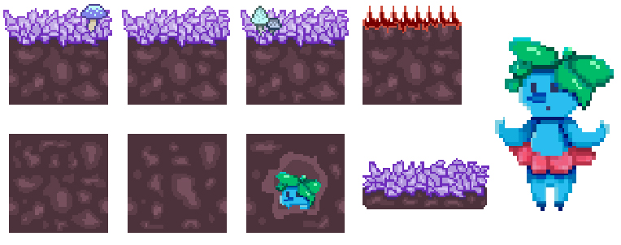

O jogo Nabi teve como objetivo criar uma fase demo de um jogo de aventura e plataforma. A história é sobre Nina, uma garota que teve seu gato, Nabi, desaparecido. Determinada a encontrá-lo, Nina se aventura de noite, escondida dos pais, então resolve explorar a floresta atrás de sua casa e, ao tropeçar em um galho no chão, Nina cai em um buraco, o que a leva em um mundo alternativo. Lá, ela encontra Nabi, porém ele virou um fantasma. Nesse projeto, eu fiz o level design e ilustrações do cenário, tiles e um personagem.
Projeto feito em conjunto com Daniela Rubio e Giovanna Camocardi.
Trabalho realizado em 2019 na PUC-Rio com os orientador Leonardo Cardarelli.
Programas utilizados: Adobe Photoshop
